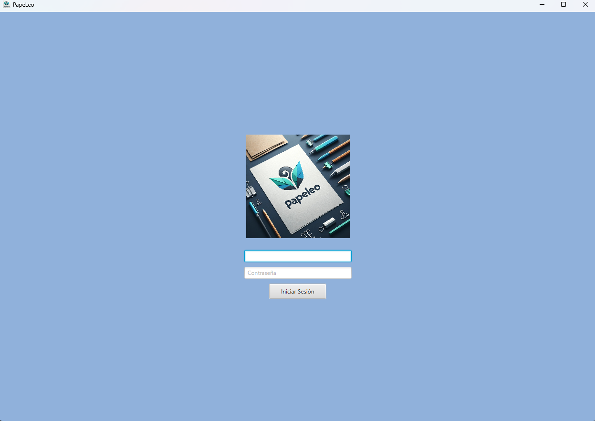
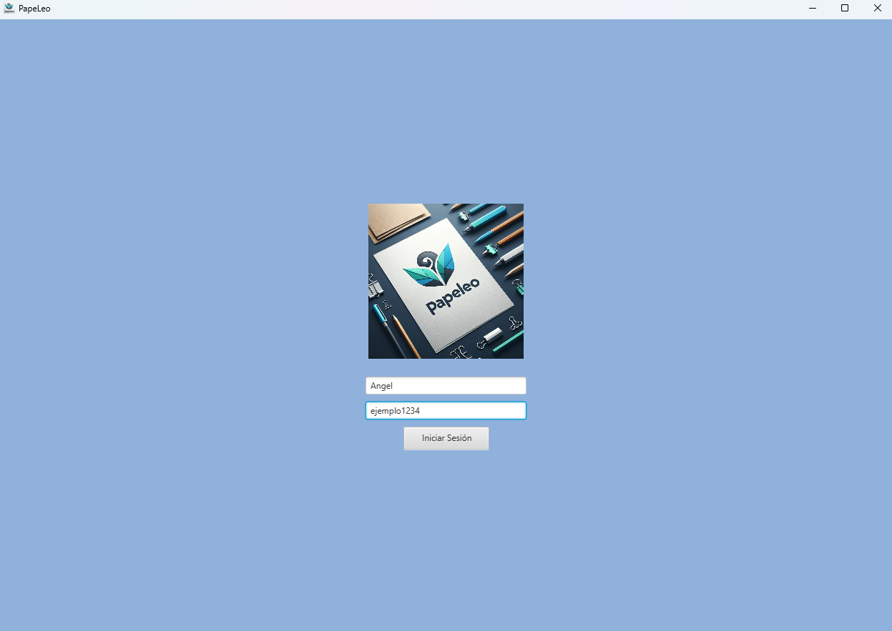
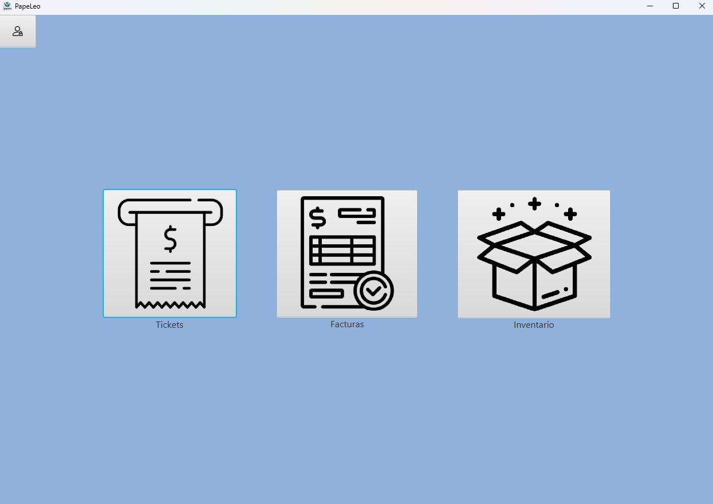

Guía para: ¿Cómo hago login?
En esta guía te explicaremos paso a paso cómo realizar un login de forma satisfactoria
1. Inicia la Aplicación

Nada más iniciar la aplicación nos encontraremos con esta Pantalla de Login, en las que tenemos dos elementos a introducir, Usuario y Contraseña, cada campo tiene un texto resaltado en gris que nos indica cual es cada uno (El superior es Usuario y el inferior Contraseña) mientras no este selecionado, podemos ir intercalando entre los elementos con el Tabulador
2. Introduce tus datos

Una vez introducidas las credenciales que se nos ha indicado, pulsamos el botón que contiene el texto "Iniciar Sesión"
3. Login Completado

Tras haber introducido satisfactoriamente ambos campos, se nos llevará a la pantalla principal. En caso de querer cerrar sesión y volver a la pantalla de Login, debemos pulsar el icono que se encuentra en la parte superior izquierda.